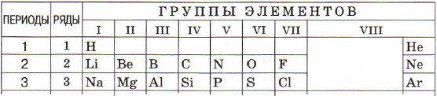
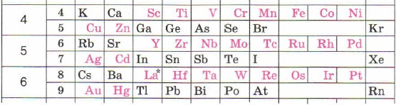
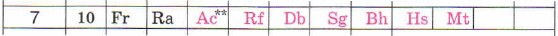
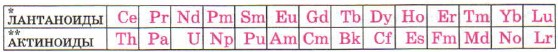
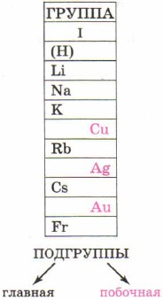

Три первых периода, состоящие каждый из одного ряда, называют малыми периодами.

Периоды 4, 5 и 6-й включают по два ряда элементов, их называют большими периодами;
4-й и 5-й периоды содержат по 18 элементов, 6-й — 32 элемента.

7-й период — незаконченный, состоит пока только из одного ряда.

Обратите внимание на «подвальные этажи» Периодической системы — там
«живут» по 14 элементов-близнецов, похожие по своим свойствам одни
на лантан La, другие на актиний Ас, которые представляют их на
верхних «этажах» таблицы: в 6-м и 7-м периодах.

По вертикали химические элементы, «живущие» в сходных по свойствам
«квартирах», располагаются друг под другом в вертикальных столбцах — группах,
которых в таблице Д. И. Менделеева восемь.
Каждая группа состоит из двух подгрупп — главной и побочной. Подгруппу,
в которую входят элементы и малых, и больших периодов, называют главной
подгруппой или группой А. Подгруппу, в которую входят элементы только
больших периодов, называют побочной подгруппой или группой В.
Так, в главную подгруппу I группы (IA группы) входят литий,
натрий, калий, рубидий и франций — это подгруппа лития Li;
побочная подгруппа этой группы (IB группы) образована медью,
серебром и золотом — это подгруппа меди Си.
